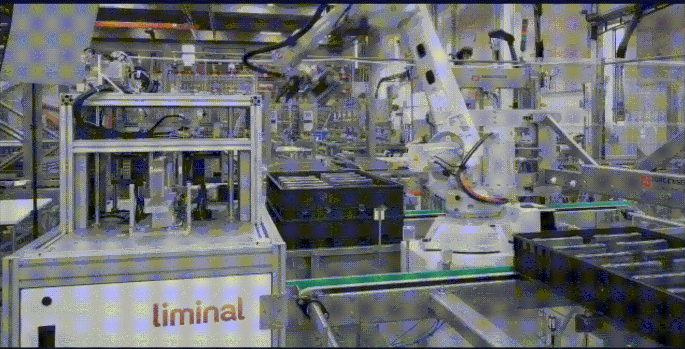
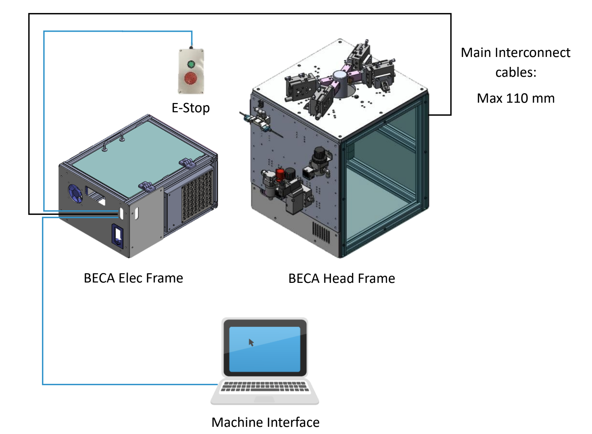
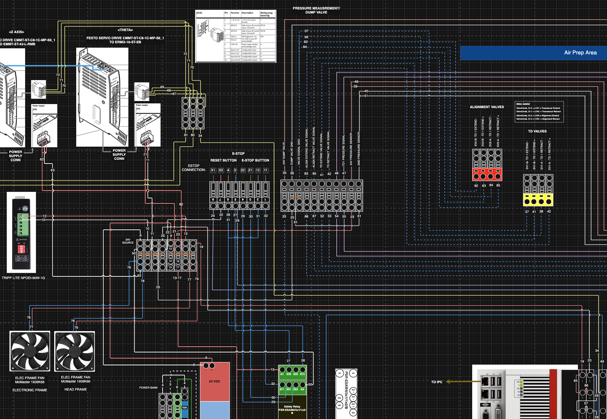

At Liminal Insights, I collaborated with ultrasound scientists and data scientists to develop an automated, non-destructive inspection platform for EV battery cells. Using ultrasound transducer technology, we designed systems capable of inspecting a wide range of battery cell form factors to support high-throughput manufacturing and quality assurance.
The EchoStat platform combines ultrasound measurement and analytics to help EV battery manufacturers improve cell quality and manufacturing processes. The EchoStat Monitoring Dashboard enables visualization and analysis of ultrasound inspection data, including trend analysis, positional scan results, and data export capabilities.
The system analyzes key ultrasound metrics such as amplitude, characteristic frequency, signal penetration, time of flight, and uniformity to identify material inconsistencies, voids, folds, crakcs, and other structural characteristics within battery cells. These measurements provide insight into internal cell properties and manufacturing consistency across multiple battery form factors.

BECA - Benchtop EchoStat for Cylindrical Cell Assessment (BECA) is the third generation EchoStat cylindrical cell raster product. It is a semi-automatic system for inspecting cylindrical cells.
My responsibilities spanned specification development and project timeline planning through design, sourcing, build, testing, and customer site deployment. The mechanical design work included system enclosure, component mounting, sample alignment, pneumatic integration and plumbing, and thermal management. I also developed the complete PLC electrical panel, integrated motor drivers and I/Os, and implemented the controls logic for the system.
Additionally, I led system characterization efforts and collaborated with the software and data team to implement calibration protocols, ensuring measurement consistency and reliable system performance. The work focused on creating a robust and precise automation platform that enabled repeatable ultrasound inspection through tight integration of mechanical, electrical, pneumatic, thermal, and software systems.

